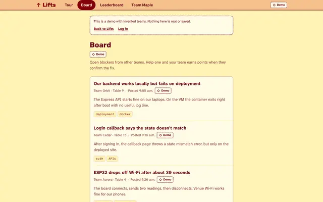
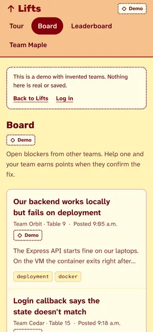
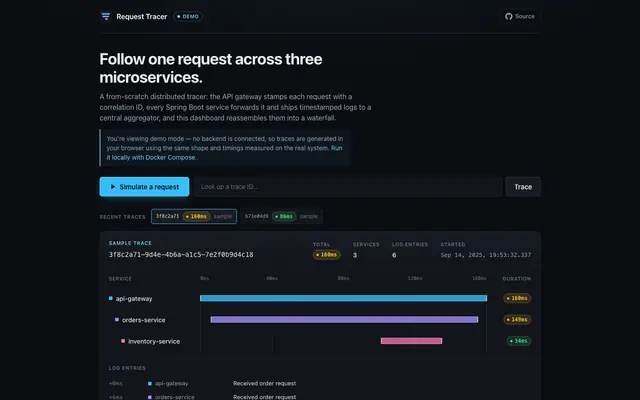
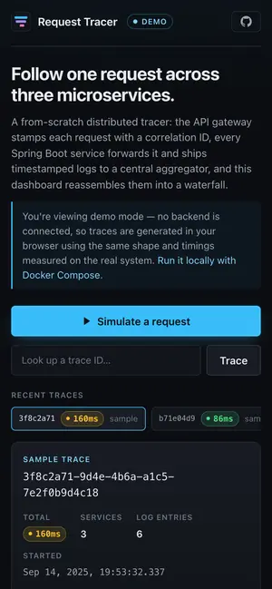
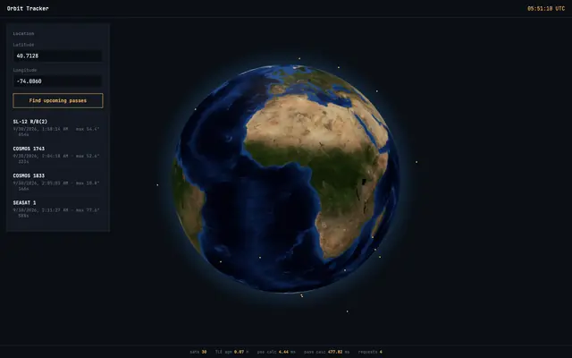
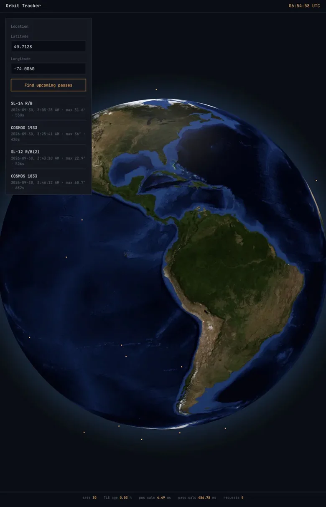

Next
Software internship or co-op
Winter 2027 and Summer 2027
Software engineering student who builds across the stack: real-time systems, APIs and data pipelines, and the React interfaces on top.
My work spans Spring Boot services, PostgreSQL and Redis performance, Python data pipelines, and React/TypeScript front ends. Two internships at National Defence Canada, one at the National Research Council Canada. BASc Software Engineering at the University of Ottawa, graduating Dec 2027.
Open to Summer 2027 and Winter 2027 software internships and co-ops in Ottawa, Toronto and the Greater Toronto Area, or the United States.
Software internship or co-op
Winter 2027 and Summer 2027
Software Engineer Intern
–
Software Engineer Intern
–
Data Analyst Intern
–
Screenshots are from the live apps.
Hackathon teams post a blocker, another team helps in a private thread, the blocked team confirms the fix, and the helpers earn points.
Next.js · TypeScript · PostgreSQL/TimescaleDB · Auth0


Correlation-ID propagation across 4 Spring Boot services, so Gateway, Orders, and Inventory logs share one trace ID in a Log Aggregator.
Java · Spring Boot · React · Docker · REST APIs
Live demo of Request Tracer Code for Request Tracer on GitHub


Python service tracking 30 live satellites from CelesTrak data with Skyfield SGP4, within 0.02% of known GOES-16 altitudes.
Python · Flask · Skyfield · globe.gl · REST APIs


AWS cost dashboard using the Cost Explorer API, with daily snapshots stored in DynamoDB.
You can run it locally today; all the setup instructions are in the GitHub repository. I’ll deploy it once it’s fully ready.
Python · Flask · AWS Cost Explorer · DynamoDB
University of Ottawa
BASc Software Engineering
Expected Dec 2027
Coursework: Data Structures and Algorithms, Operating Systems, Object Oriented Programming.
I’m looking for Summer 2027 and Winter 2027 software internships and co-ops in Ottawa, Toronto and the Greater Toronto Area, or the United States. Email reaches me fastest.